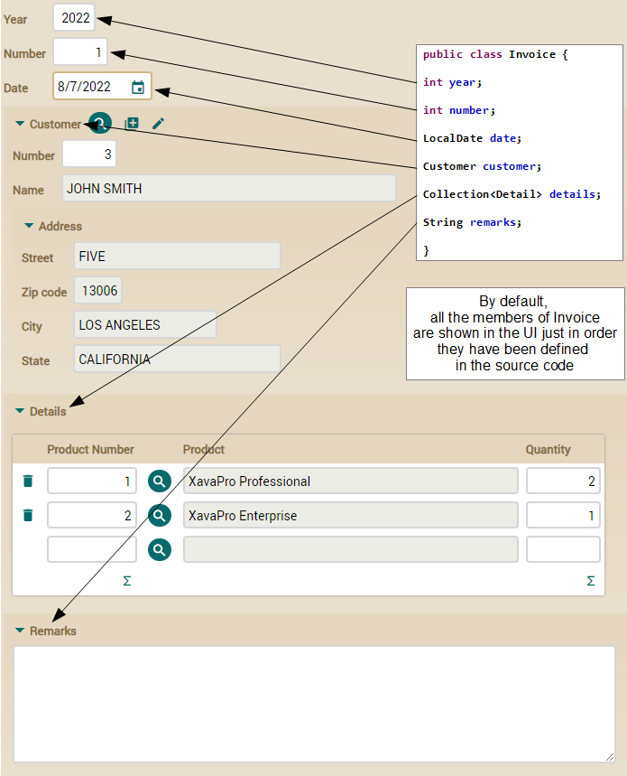
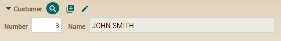
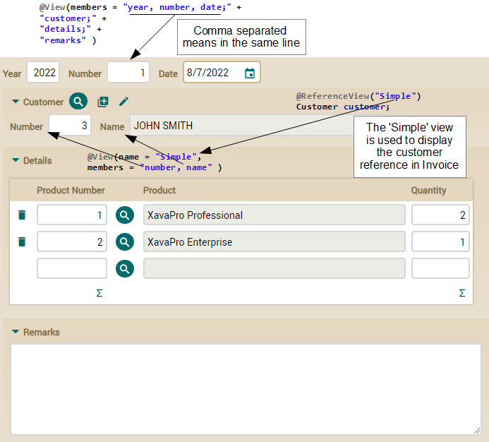

In this lesson we're going to make
our application looks better with a small amount of code.
If you don't like videos follow
the instructions below.
Default user interface
This is the default user interface for
Invoice:

As you can see, OpenXava shows all the members, one per row, in the order
you have declared them in the source code. Also, you can see how in the
case of the customer reference the default view of the
Customer
is created.
We are going to do some improvements. First, we'll define the layout of
the members explicitly. In this way we can put
year,
number
and
date in the same row. Second, we are going to use a simpler
view for
Customer. The user does not need to see all the data of
the customer when he is entering the invoice.
Using
@View for defining layout
For defining the layout of
Invoice members in the user interface
you have to use the
@View annotation. It is easy because you
only have to enumerate the members to be shown. Look at the code:
@View(members= // This view has no name, so it will be the view used by default
"year, number, date;" + // Comma separated means in the same line
"customer;" + // Semicolon means a new line
"details;" +
"remarks"
)
public class Invoice {
At the end, we show all the
members of
Invoice, but we use commas to separate
year,
number and
date. Thus they are in the same line,
producing a more compact user interface, as this:
Using
@ReferenceView to refine the user interface for reference
You still need to refine the way the
customer reference is
displayed, because it displays all the members of
Customer, and
for entering data for an
Invoice, a simpler view of the customer
may be better. To do so, you have to define a
Simple view in
Customer,
and then indicate in
Invoice that you want to use the
Simple
view of
Customer to display it.
First, let's define the
Simple view in
Customer:
@View(name="Simple", // This view is used only when “Simple” is specified
members="number, name" // Shows only number and name in the same line
)
public class Customer {
When a view has a name, as in this
case, then that view is only used when that name is specified. That is,
though Customer has only this @View annotation, when
you try to display a Customer it will not use this Simple
view, but the one generated by default. If you define a @View
with no name, that view will be the default one, though that is not the
case here.
Now, you have to indicate that the reference to Customer from Invoice
must use this Simple view. This is done by means of @ReferenceView.
Edit the customer reference in the Invoice class in this
way:
@ManyToOne(fetch=FetchType.LAZY, optional=false)
@ReferenceView("Simple") // The view named 'Simple' is used to display this reference
Customer customer;
Really simple, you only have to
indicate the name of the view of the referenced entity you want to use.
After this the
customer reference will be shown in a more
compact way:

You can see below how you have refined your
Invoice interface.
Refined user interface
This is the result of our refinements in the
Invoice user
interface:

You have seen how easy it is to use
@View and
@ReferenceView
to get a more compact user interface for
Invoice.
Now you have a user interface good enough to start working, and you really
have done little work to get it going.
Summary
In this lesson you have learned how to refine the default user interface
using some OpenXava annotations. If you want to know all possible ways of
refining the user interface with OpenXava
look
at the reference guide.
Any problem with this lesson? Ask in the forum Everything fine?
Go to Lesson 5